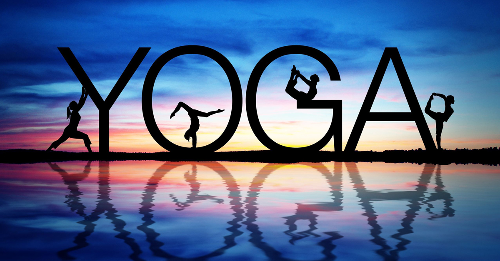

Breathe, Stretch, Relax
Yoga improves physical and mental health, manages stress, lessens chronic pain, increases flexibility, improves body awareness, and more. Best of all, anyone can do it! Use this page to explore beginning steps to yoga.
Getting Ready
Clothing & Supplies
To practice yoga, you should wear comfortable, loose, and breathable clothing. Don't wear jeans. If you're cold, wear layers so you can remove the outer ones once you warm up. You will also need a yoga mat, water bottle, and a folded blanket or cushion to sit on.
Breathe
Breathing is the first and most important part of yoga. Sit on your blanket or cushion with your back straight and shoulders relaxed. Start taking slow, deep breaths, but don't strain. Try to make the exhales equal to the inhales. Tune in and notice how your body is feeling.
Basic Poses

Mountain Pose
Stand up tall with your feet no more than shoulder width apart. Your legs should be straight, but don't lock your kneeds. With your arms at your sides, face your palms foward. Feel your chest opening and your spine stretching towards the sky. Focus your gaze directly forward on something that is not moving. Breathe several deep, slow breaths.
Forward Fold
From your Mountain Pose, bring your arms up above your head on an inhale. As you exhale, hinge at the hips and bend forward, sweeping your arms down towards the floor. Make sure to maintain a bend in your knees. It's okay if your hands can't touch the ground. Breathe deep. On each exhale, see if you can relax into the stretch in the back of your legs, but don't strain.